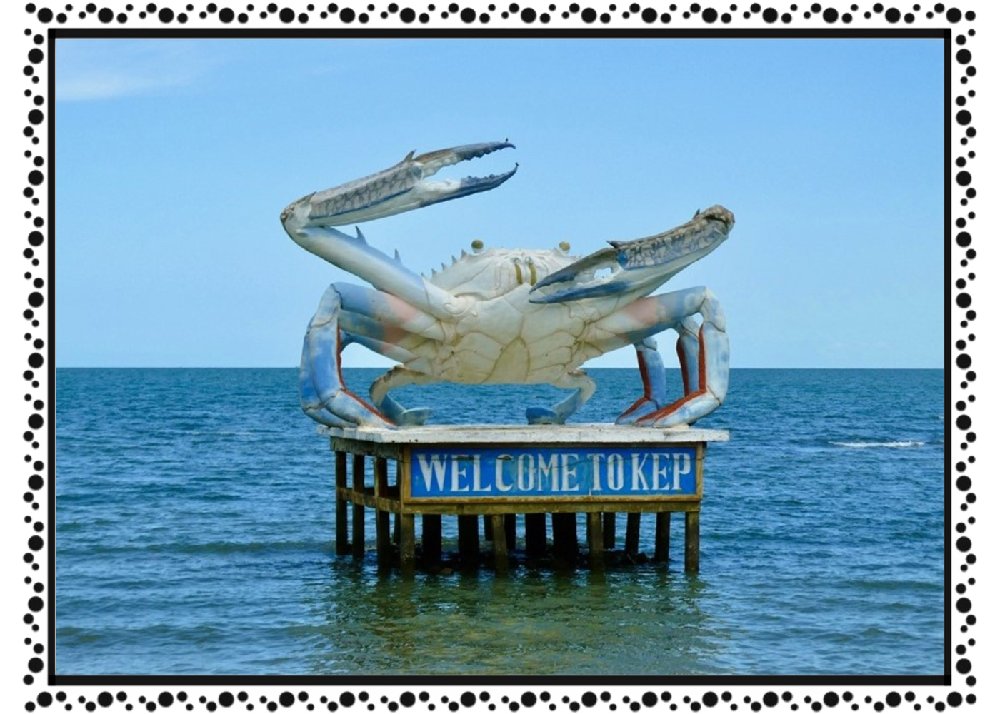

ខេត្ត និងក្រុងនៃព្រះរាជាណាចក្រកម្ពុជា
កែប
 ខេត្តកែប គឺជាខេត្តតូចជាងគេបំផុតក្នុងប្រទេសកម្ពុជា ដែលមានផ្ទៃក្រឡាចំនួន ៣៣៦គីឡូម៉ែត្រការ៉េ (១៣០ម៉ាញ៍) ដែលមានប្រជាជនចំនួន ៤១ ៧៩៨។ ជាខេត្តមួយក្នុងចំណោមខេត្តថ្មីបំផុតរបស់កម្ពុជា រួមជាមួយនឹងខេត្តប៉ៃលិន ខេត្តព្រះសីហនុ និងខេត្តត្បូងឃ្មុំ ដែលបង្កើតឡើងដោយព្រះរាជក្រឹត្យចុះថ្ងៃទី២២ ខែធ្នូ ឆ្នាំ២០០៨ ដែលបានបំបែកក្រុងកែប និងស្រុកដំណាក់ចង្អើរចេញពីខេត្តកំពត ក៏ដូចជាការកែសម្រួលព្រំប្រទល់ខេត្តមួយចំនួនផងដែរ។ ខេត្តកែបជាខេត្តតូចជាងគេ និងមានប្រជាជនរស់នៅតិចជាងគេបំផុតរបស់កម្ពុជា។ ទីរួមខេត្តគឺក្រុងកែប ហើយខេត្តនេះមានឧទ្យានជាតិកែបថែមទៀតផង។ខេត្តកែបគឺជាខេត្តមួយដ៏តូចបំផុតរបស់ប្រទេសកម្ពុជា ដែលគ្របដណ្ដប់ផ្ទៃដីប្រមាណ 336 km2 (130 sq mi) និងមានប្រជាជនចំនួន ៤០ ២៨០ នាក់។ [១] វាគឺជាខេត្តមួយក្នុងចំណោមខេត្តថ្មីៗបំផុតនៃកម្ពុជា រួមជាមួយ ប៉ៃលិន ព្រះសីហនុ និង ត្បូងឃ្មុំ ដែលត្រូវបានបង្កើតឡើងតាមរាជក្រឹត្យថ្ងៃ ២២ ធ្នូ ២០០៨ ត្រូវបានបំបែកចេញពីខេត្តកំពត ស្របនឹងការសម្របសម្រួលព្រំសីមាខេត្តជាច្រើន។[៣][ត្រូវការអំណះអំណាង] ទីរួមខេត្តគឺក្រុងកែប ហើយក៏មានឧទ្យានជាតិមួយដែរ ដែលគេហៅថាឧទ្យានជាតិកែប។ ខេត្តកែបជាខេត្តមួយក្នុងចំណោមខេត្តទាំង៤ដែលស្ថិតនៅតាមឆ្នេរសមុទ្រភាគនិរតីនៃប្រទេស[១]កម្ពុជា។ ខេត្តកែបស្ថិតនៅមិនប៉ុន្មានសហាតិមាត្រពីព្រំដែនកម្ពុជា-វៀតណាមឡើយ។ ក្រុងកែបធ្លាប់ជាទីក្រុងឆ្នេរសមុទ្រដ៏ពេញនិយមរបស់កម្ពុជា។ ឆ្នេរសមុទ្រនៅក្រុងកែបជាឆ្នេរព្រៃកោងកាង និង គ្រួសខ្មៅៗ ។ក្រុងកែបសំបូរគ្រឿងសមុទ្រថោកៗតែឆ្ងាញ់ ជាពិសេសគឺ ក្ដាមសមុទ្រ។ ខេត្តកែបក៍មាននូវផលិតផលជាច្រើនផងដែរដូចជា ម្រេច អំបិល ផ្លែឈើ ធុរ៉េន ស្វាយ ដូង សាវម៉ាវ ហើយនិងមានតំបន់ទេសចរណ៏ ជាច្រើនដូចជា ឆ្នេរសមុទ្រ ភ្នំ កោះ រូងភ្នំ និងរមណីយដ្ឋានជាច្រើន ។ ជាពិសេសក៍មានសណ្ឋាគារសម្រាប់ ភ្ញៀវទេសចរណ៍ជាតិ និង អន្តរជាតិសម្រាប់ស្នាក់នៅទីនោះផងដែរ។ ទឹកដីកែបហ៊ុំព័ទ្ធទាំងស្រុងដោយ[៤]ខេត្តកំពត លើកលែងតែឆ្នេរសមុទ្រ ១៦ គ.ម. ចេញ នៅខាងត្បូងជាប់ព្រំប្រទល់ឈូងសមុទ្រថៃ និង កោះភូគុក (កោះត្រល់) នៃវៀតណាម។ ព្រំខេត្តខាងលិចមានចម្ងាយ ២០ គ.ម. ពីក្រុងកំពត។ ព្រំខេត្តខាងកើតមានចម្ងាយប្រហែល ២០ គីឡូម៉ែត្រពីព្រំដែនវៀតណាម។